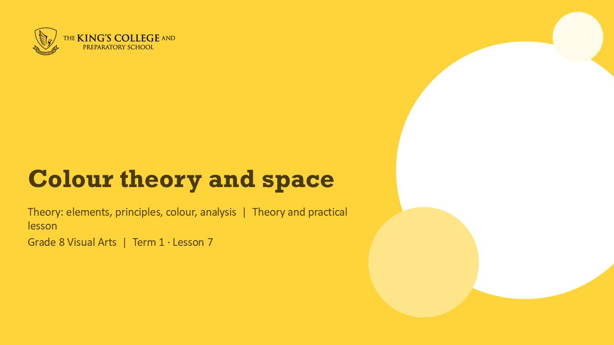

Term 1 · Lesson 7 · Practical lesson
Texture 2: smooth and reflective surfaces
Start here
Today I will
- Today I will see how a shiny surface differs from a textured one
- Today I will use hard highlights, reflections and strong contrast to draw shine
- Today I will draw a smooth and a textured object side by side
Look at yourself in the back of a spoon, then the front. Why do you look so strange?
Words to Know
| Word | Meaning |
|---|---|
| Smooth and reflective surfaces | Surfaces such as glass and metal, which show sharp highlights, strong contrast, crisp edges and reflections. |
| Reflection | A mirrored image of the surroundings seen on a shiny surface, often bent by its curve. |
| Contrast | A big difference side by side, such as very light next to very dark. |
| Shine | A bright, sharp highlight on a smooth or glossy surface. |
| Edge | Where one tone meets another: hard edges are sharp, soft edges are gradual. |
Slides

Videos
Notes
Drawing shine: hard highlights, reflections and strong contrast on metal and glass; smooth versus rough side by side.
Smooth versus rough
| Textured (rough) surface | Smooth (reflective) surface |
|---|---|
| Many small marks repeated | Smooth, blended tone with no visible marks |
| Soft, gentle changes in tone | Sudden jumps from very dark to bright white |
| Many small, soft highlights | A few small, sharp highlights |
| Shows its own surface | Shows the room around it, bent and stretched |
How to draw shine
- Outline lightly: Draw the shape with a light HB line and check the proportions.
- Map the shapes: Lightly outline the shapes of light and dark you see inside the object.
- Save the highlights: Leave them as white paper, or lift them out with a putty eraser.
- Go very dark: Use 4B or 6B right beside the highlights for strong contrast.
- Edges: Keep some edges hard and sharp, blend others softly.
Shine is not a colour: it is darks and lights placed side by side.
Practical
You need: Visual journal, HB, 2B, 4B and 6B pencils, putty eraser, blending stump, spoons, marbles or foil, a textured object, desk lamp
Shiny and textured side by side
- Place the spoon and the marble (or foil shape) in front of you with the lamp on one side.
- Draw the spoon lightly, about the size of your hand, then map its light and dark shapes.
- Shade smoothly, saving the white highlights and pushing the darks beside them.
- Draw the marble or foil shape the same way.
- Next to them, draw the textured object using marks from your texture boxes.
- Write one sentence under the drawings: how is the shiny surface different from the rough one?
Test yourself
- Why does a reflection on a spoon look bent?
- How do you keep a highlight bright?
- Name two differences between drawing a shiny and a rough surface.
Show answers
1. The curved surface distorts (bends) the reflection. 2. Leave the white paper untouched or lift it out with a putty eraser. 3. Any two: shiny is smooth and blended, rough uses repeated marks; shiny has sudden dark-to-white jumps and sharp highlights, rough has softer changes and many small highlights.
Finished early?
Practise the two kinds of edge that make shine look real.
- Draw two small rectangles in your visual journal.
- In the first, put a very dark 6B area right next to white paper with a sharp border (hard edge).
- In the second, blend from dark to white gradually with a stump (soft edge).
- Lift one tiny sharp highlight out of the dark area with a putty eraser.